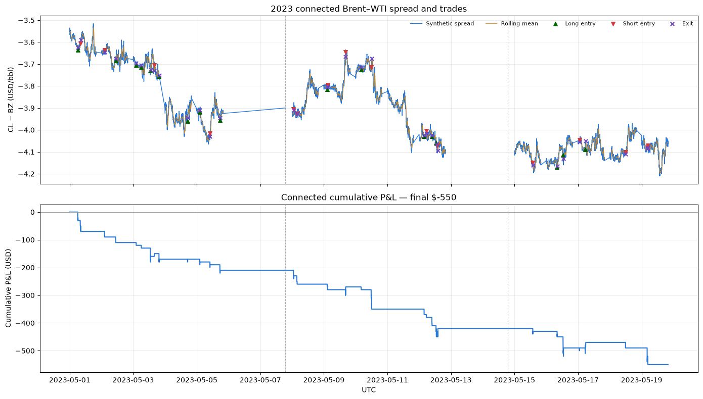
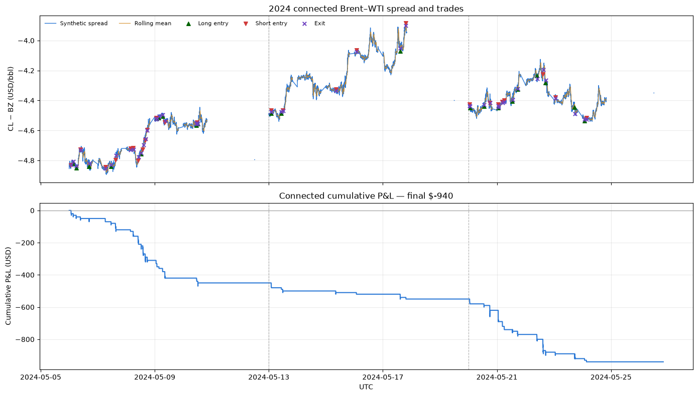
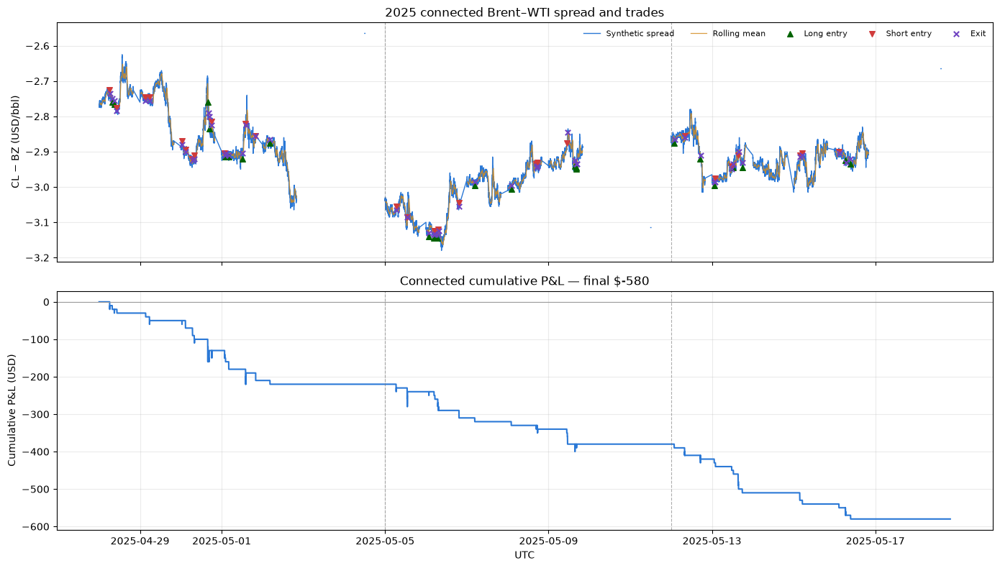
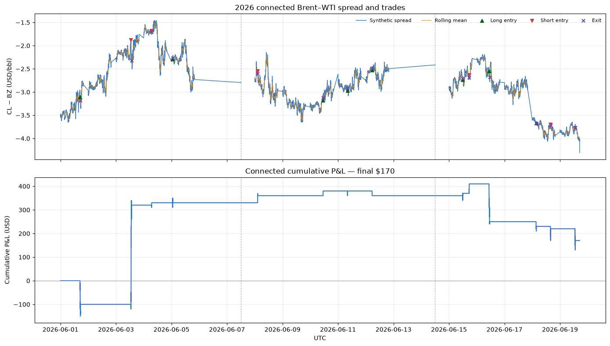

Brent–WTI Backtest: Period Returns, P&L, Spread, and Trade Log#
This notebook runs the repository’s executable Brent–WTI mean-reversion strategy across every locally available, execution-ready one-minute data period. The current sample covers twelve independent weeks spanning 2023 through 2026, including three consecutive May blocks in both 2024 and 2025. Every sample uses the same 30-minute strategy window, so the comparison tests different calendar periods rather than different model settings. The notebook reports:
return and P&L by market-data period;
synthetic spread behavior and quoted listed-spread width;
completed trades, win rate, and average holding time;
cumulative P&L reset within each period; and
a complete round-trip trade log.
Execution is conservative: long positions pay the listed spread ask and sell the bid; short positions sell the bid and cover at the ask. Therefore the P&L includes the observed bid–ask cost. All timestamps are UTC.
from pathlib import Path
import os
import sys
import tempfile
import warnings
os.environ.setdefault("MPLCONFIGDIR", tempfile.mkdtemp(prefix="mplconfig-backtest-"))
import matplotlib.pyplot as plt
import numpy as np
import pandas as pd
from IPython.display import display
PROJECT_ROOT = Path.cwd().resolve()
if PROJECT_ROOT.name == "notebooks":
PROJECT_ROOT = PROJECT_ROOT.parent
SRC_DIR = PROJECT_ROOT / "src"
DATA_DIR = PROJECT_ROOT / "_data" / "clean"
OUTPUT_DIR = PROJECT_ROOT / "_output" / "backtesting_period_analysis"
OUTPUT_DIR.mkdir(parents=True, exist_ok=True)
if str(SRC_DIR) not in sys.path:
sys.path.insert(0, str(SRC_DIR))
from strategy_engine import run_strategy
pd.set_option("display.max_columns", 40)
pd.set_option("display.width", 160)
Matplotlib is building the font cache; this may take a moment.
Configuration#
The rolling mean, standard deviation, stationarity tests, and half-life estimate all use 30 one-minute observations. All parameters are fixed across calendar periods.
CONTRACT_MULTIPLIER = 1_000.0
BACKTEST_CONFIGS = {
"30-minute": {
"window": 30,
"deviation_threshold": 2.5,
"halflife_threshold": 15.0,
"exit_threshold": 0.5,
"stop_loss": 1_000.0,
"time_stop": 30,
},
}
BASELINE_CONFIG = "30-minute"
config_table = pd.DataFrame(BACKTEST_CONFIGS).T
config_table.index.name = "configuration"
config_table
| window | deviation_threshold | halflife_threshold | exit_threshold | stop_loss | time_stop | |
|---|---|---|---|---|---|---|
| configuration | ||||||
| 30-minute | 30.0 | 2.5 | 15.0 | 0.5 | 1000.0 | 30.0 |
Load the independent market-data periods#
Exactly three backtest periods are selected for each year; later downloaded extensions are deliberately excluded. The 2025 periods are assembled from overlapping source files into exact seven-day windows beginning April 28, May 5, and May 12. Rolling state, positions, and cumulative P&L never carry across a period boundary.
required_columns = {
"synth_mid",
"ls_mid",
"ls_bid_px_00",
"ls_ask_px_00",
"cl_mid",
"bz_mid",
"cl_instrument_id",
"bz_instrument_id",
"cl_n_events",
"bz_n_events",
}
SELECTED_PERIOD_FILES = [
"stable_2023_brent_wti_aligned_1m_2023-05-01_2023-05-06.parquet",
"stable_2023_brent_wti_aligned_1m_2023-05-06_2023-05-13.parquet",
"stable_2023_brent_wti_aligned_1m_2023-05-13_2023-05-20.parquet",
"brent_wti_aligned_1m_2024-05-06_2024-05-13.parquet",
"brent_wti_aligned_1m_2024-05-13_2024-05-20.parquet",
"brent_wti_aligned_1m_2024-05-20_2024-05-27.parquet",
"brent_wti_aligned_1m_2026-06-01_2026-06-06.parquet",
"brent_wti_aligned_1m_2026-06-06_2026-06-13.parquet",
"brent_wti_aligned_1m_2026-06-13_2026-06-20.parquet",
]
SOURCE_FILES_2025 = [
"brent_wti_aligned_1m_2025-04-28_2025-05-05.parquet",
"brent_wti_aligned_1m_2025-05-05_2025-05-10.parquet",
"brent_wti_aligned_1m_2025-05-06_2025-05-13.parquet",
"brent_wti_aligned_1m_2025-05-13_2025-05-20.parquet",
]
missing_files = [
name for name in SELECTED_PERIOD_FILES + SOURCE_FILES_2025
if not (DATA_DIR / name).exists()
]
if missing_files:
raise FileNotFoundError(f"Missing selected three-week data files: {missing_files}")
loaded_periods = []
for filename in SELECTED_PERIOD_FILES:
path = DATA_DIR / filename
frame = pd.read_parquet(path).sort_index()
missing_columns = required_columns.difference(frame.columns)
if missing_columns:
raise ValueError(f"{path.name} is missing required columns: {sorted(missing_columns)}")
loaded_periods.append((path, frame))
loaded_periods.sort(key=lambda item: item[1].index.min())
period_paths = [path for path, _ in loaded_periods]
if not period_paths:
raise FileNotFoundError(
f"No execution-ready aligned one-minute parquet files found in {DATA_DIR}. "
"Run the data-cleaning pipeline first."
)
assert len(period_paths) == 9
def period_name(path: Path) -> str:
stem = path.stem
if stem.startswith("stable_2023_brent_wti_aligned_1m_"):
return "2023 stable | " + stem.removeprefix("stable_2023_brent_wti_aligned_1m_")
dates = stem.removeprefix("brent_wti_aligned_1m_")
return f"{dates[:4]} | {dates}"
period_data = {period_name(path): frame for path, frame in loaded_periods}
source_2025 = pd.concat(
[pd.read_parquet(DATA_DIR / filename) for filename in SOURCE_FILES_2025]
).sort_index()
source_2025 = source_2025.loc[~source_2025.index.duplicated(keep="last")]
missing_columns = required_columns.difference(source_2025.columns)
if missing_columns:
raise ValueError(f"2025 source data is missing required columns: {sorted(missing_columns)}")
for start_date in pd.to_datetime(["2025-04-28", "2025-05-05", "2025-05-12"], utc=True):
end_date = start_date + pd.Timedelta(days=7)
period = f"2025 | {start_date.date()}_{end_date.date()}"
period_data[period] = source_2025.loc[
(source_2025.index >= start_date) & (source_2025.index < end_date)
].copy()
period_data = dict(sorted(period_data.items(), key=lambda item: item[1].index.min()))
assert len(period_data) == 12
data_inventory = pd.DataFrame(
[
{
"period": name,
"rows": len(frame),
"start_utc": frame.index.min(),
"end_utc": frame.index.max(),
"non_null_spread": frame["synth_mid"].notna().sum(),
}
for name, frame in period_data.items()
]
).set_index("period")
data_inventory
| rows | start_utc | end_utc | non_null_spread | |
|---|---|---|---|---|
| period | ||||
| 2023 stable | 2023-05-01_2023-05-06 | 7021 | 2023-05-01 00:00:00+00:00 | 2023-05-05 21:00:00+00:00 | 6835 |
| 2023 stable | 2023-05-06_2023-05-13 | 7321 | 2023-05-07 19:00:00+00:00 | 2023-05-12 21:00:00+00:00 | 7001 |
| 2023 stable | 2023-05-13_2023-05-20 | 7321 | 2023-05-14 19:00:00+00:00 | 2023-05-19 21:00:00+00:00 | 6960 |
| 2024 | 2024-05-06_2024-05-13 | 10080 | 2024-05-06 00:00:00+00:00 | 2024-05-12 23:59:00+00:00 | 7031 |
| 2024 | 2024-05-13_2024-05-20 | 10080 | 2024-05-13 00:00:00+00:00 | 2024-05-19 23:59:00+00:00 | 7027 |
| 2024 | 2024-05-20_2024-05-27 | 10080 | 2024-05-20 00:00:00+00:00 | 2024-05-26 23:59:00+00:00 | 6981 |
| 2025 | 2025-04-28_2025-05-05 | 10080 | 2025-04-28 00:00:00+00:00 | 2025-05-04 23:59:00+00:00 | 6994 |
| 2025 | 2025-05-05_2025-05-12 | 10080 | 2025-05-05 00:00:00+00:00 | 2025-05-11 23:59:00+00:00 | 6992 |
| 2025 | 2025-05-12_2025-05-19 | 10080 | 2025-05-12 00:00:00+00:00 | 2025-05-18 23:59:00+00:00 | 7002 |
| 2026 | 2026-06-01_2026-06-06 | 7021 | 2026-06-01 00:00:00+00:00 | 2026-06-05 21:00:00+00:00 | 6853 |
| 2026 | 2026-06-06_2026-06-13 | 7741 | 2026-06-07 12:00:00+00:00 | 2026-06-12 21:00:00+00:00 | 7039 |
| 2026 | 2026-06-13_2026-06-20 | 7501 | 2026-06-14 12:00:00+00:00 | 2026-06-19 17:00:00+00:00 | 6764 |
Run the 30-minute strategy against every data period#
The engine enforces its normal 00:00–19:59 UTC trading window and closes an open position before a timestamp gap or at the end of each input sample.
results = {}
with warnings.catch_warnings():
warnings.simplefilter("ignore")
for config_name, parameters in BACKTEST_CONFIGS.items():
for period, frame in period_data.items():
key = (config_name, period)
results[key] = run_strategy(
data=frame,
contract_multiplier=CONTRACT_MULTIPLIER,
**parameters,
)
run_inventory = pd.DataFrame(
[
{
"configuration": config_name,
"period": period,
"bars": len(run),
"entries": int(run["long_entry"].fillna(False).sum() + run["short_entry"].fillna(False).sum()),
"exits": int(run["exit_flag"].fillna(False).sum()),
}
for (config_name, period), run in results.items()
]
)
assert (run_inventory["entries"] == run_inventory["exits"]).all(), "Every entry should have a matching exit."
run_inventory
| configuration | period | bars | entries | exits | |
|---|---|---|---|---|---|
| 0 | 30-minute | 2023 stable | 2023-05-01_2023-05-06 | 6000 | 13 | 13 |
| 1 | 30-minute | 2023 stable | 2023-05-06_2023-05-13 | 6060 | 12 | 12 |
| 2 | 30-minute | 2023 stable | 2023-05-13_2023-05-20 | 6060 | 8 | 8 |
| 3 | 30-minute | 2024 | 2024-05-06_2024-05-13 | 8400 | 23 | 23 |
| 4 | 30-minute | 2024 | 2024-05-13_2024-05-20 | 8400 | 8 | 8 |
| 5 | 30-minute | 2024 | 2024-05-20_2024-05-27 | 8400 | 17 | 17 |
| 6 | 30-minute | 2025 | 2025-04-28_2025-05-05 | 8400 | 20 | 20 |
| 7 | 30-minute | 2025 | 2025-05-05_2025-05-12 | 8400 | 16 | 16 |
| 8 | 30-minute | 2025 | 2025-05-12_2025-05-19 | 8400 | 14 | 14 |
| 9 | 30-minute | 2026 | 2026-06-01_2026-06-06 | 6000 | 4 | 4 |
| 10 | 30-minute | 2026 | 2026-06-06_2026-06-13 | 6480 | 4 | 4 |
| 11 | 30-minute | 2026 | 2026-06-13_2026-06-20 | 6301 | 6 | 6 |
Build the round-trip trade log#
trade_return is executable trade P&L divided by the absolute spread-entry
notional (abs(entry_price) × 1,000). This is useful for comparing trades,
but it is not a return on margin or portfolio capital. The latter requires a
separately specified capital base.
def build_trade_log(run: pd.DataFrame, configuration: str, period: str) -> pd.DataFrame:
"""Pair each entry with its exit and return one row per completed trade."""
trades = []
active = None
for timestamp, row in run.iterrows():
is_long_entry = bool(pd.notna(row["long_entry"]) and row["long_entry"])
is_short_entry = bool(pd.notna(row["short_entry"]) and row["short_entry"])
if is_long_entry or is_short_entry:
active = {
"configuration": configuration,
"period": period,
"entry_time": timestamp,
"side": "long" if is_long_entry else "short",
"position": 1 if is_long_entry else -1,
"entry_price": float(row["entry_price"]),
"entry_synth_spread": float(row["synth_mid"]),
"entry_zscore": float(row["zscore"]),
"entry_halflife": float(row["halflife"]),
"entry_quoted_width": float(row["ls_ask"] - row["ls_bid"]),
}
if bool(pd.notna(row["exit_flag"]) and row["exit_flag"]):
if active is None:
raise RuntimeError(f"Exit without an entry at {timestamp}")
if active["position"] == 1:
exit_price = float(row["ls_bid"])
else:
exit_price = float(row["ls_ask"])
pnl = float(row["position_pnl"])
entry_notional = abs(active["entry_price"]) * CONTRACT_MULTIPLIER
active.update(
{
"exit_time": timestamp,
"exit_price": exit_price,
"exit_synth_spread": float(row["synth_mid"]),
"exit_zscore": float(row["zscore"]) if pd.notna(row["zscore"]) else np.nan,
"zscore_change": (
float(row["zscore"] - active["entry_zscore"])
if pd.notna(row["zscore"])
else np.nan
),
"holding_minutes": int(row["position_age"]),
"pnl_usd": pnl,
"trade_return": pnl / entry_notional if entry_notional > 0 else np.nan,
"exit_reason": row["exit_reason"],
}
)
trades.append(active)
active = None
if active is not None:
raise RuntimeError(f"Unclosed trade remains in {configuration}, {period}")
return pd.DataFrame(trades)
trade_frames = [
build_trade_log(run, configuration, period)
for (configuration, period), run in results.items()
]
trade_log = pd.concat(trade_frames, ignore_index=True) if trade_frames else pd.DataFrame()
trade_log.insert(0, "trade_id", np.arange(1, len(trade_log) + 1))
P&L, return, spread, and trades by period#
pnl_usdis the sum of executable minute-by-minute P&L.period_returndivides P&L by the sum of absolute entry notionals. It is a trade-normalized comparison, not a return on portfolio capital.mean_synth_spreadandsynth_spread_volatilitydescribe the CL–BZ signal.mean_quoted_widthis the average bid–ask width of the exchange-listed spread used for fills.
def summarize_period(configuration: str, period: str, run: pd.DataFrame) -> dict:
trades = trade_log.loc[
trade_log["configuration"].eq(configuration) & trade_log["period"].eq(period)
]
pnl = float(run["step_pnl"].fillna(0).sum())
entry_notional = (trades["entry_price"].abs() * CONTRACT_MULTIPLIER).sum()
listed_width = run["ls_ask"] - run["ls_bid"]
return {
"configuration": configuration,
"year": int(run.index.min().year),
"period": period,
"start_utc": run.index.min(),
"end_utc": run.index.max(),
"pnl_usd": pnl,
"period_return": pnl / entry_notional if entry_notional > 0 else np.nan,
"mean_synth_spread": run["synth_mid"].mean(),
"synth_spread_volatility": run["synth_mid"].std(),
"mean_quoted_width": listed_width.mean(),
"trades": len(trades),
"winning_trades": int(trades["pnl_usd"].gt(0).sum()),
"win_rate": trades["pnl_usd"].gt(0).mean() if len(trades) else np.nan,
"average_trade_pnl": trades["pnl_usd"].mean() if len(trades) else np.nan,
"average_holding_minutes": trades["holding_minutes"].mean() if len(trades) else np.nan,
}
period_summary = pd.DataFrame(
[summarize_period(configuration, period, run) for (configuration, period), run in results.items()]
).sort_values(["configuration", "period"])
# Bar-level and round-trip P&L must reconcile for every independent run.
trade_pnl_check = (
trade_log.groupby(["configuration", "period"])["pnl_usd"]
.sum()
.reindex(pd.MultiIndex.from_frame(period_summary[["configuration", "period"]]), fill_value=0.0)
.to_numpy()
)
assert np.allclose(period_summary["pnl_usd"], trade_pnl_check), "Trade-log P&L does not reconcile."
period_summary.style.format(
{
"pnl_usd": "${:,.2f}",
"period_return": "{:.2%}",
"mean_synth_spread": "{:.4f}",
"synth_spread_volatility": "{:.4f}",
"mean_quoted_width": "{:.4f}",
"win_rate": "{:.1%}",
"average_trade_pnl": "${:,.2f}",
"average_holding_minutes": "{:.1f}",
}
).hide(axis="index").set_caption("Performance by independent 30-minute backtest period")
| configuration | year | period | start_utc | end_utc | pnl_usd | period_return | mean_synth_spread | synth_spread_volatility | mean_quoted_width | trades | winning_trades | win_rate | average_trade_pnl | average_holding_minutes |
|---|---|---|---|---|---|---|---|---|---|---|---|---|---|---|
| 30-minute | 2023 | 2023 stable | 2023-05-01_2023-05-06 | 2023-05-01 00:00:00+00:00 | 2023-05-05 19:59:00+00:00 | $-210.00 | -0.43% | -3.7728 | 0.1469 | 0.0163 | 13 | 1 | 7.7% | $-16.15 | 9.0 |
| 30-minute | 2023 | 2023 stable | 2023-05-06_2023-05-13 | 2023-05-07 19:00:00+00:00 | 2023-05-12 19:59:00+00:00 | $-210.00 | -0.45% | -3.8741 | 0.1183 | 0.0155 | 12 | 2 | 16.7% | $-17.50 | 11.2 |
| 30-minute | 2023 | 2023 stable | 2023-05-13_2023-05-20 | 2023-05-14 19:00:00+00:00 | 2023-05-19 19:59:00+00:00 | $-130.00 | -0.40% | -4.0912 | 0.0423 | 0.0213 | 8 | 1 | 12.5% | $-16.25 | 11.6 |
| 30-minute | 2024 | 2024 | 2024-05-06_2024-05-13 | 2024-05-06 00:00:00+00:00 | 2024-05-12 19:59:00+00:00 | $-450.00 | -0.42% | -4.6834 | 0.1274 | 0.0164 | 23 | 0 | 0.0% | $-19.57 | 12.3 |
| 30-minute | 2024 | 2024 | 2024-05-13_2024-05-20 | 2024-05-13 00:00:00+00:00 | 2024-05-19 19:59:00+00:00 | $-100.00 | -0.29% | -4.2316 | 0.1531 | 0.0159 | 8 | 0 | 0.0% | $-12.50 | 5.1 |
| 30-minute | 2024 | 2024 | 2024-05-20_2024-05-27 | 2024-05-20 00:00:00+00:00 | 2024-05-26 19:59:00+00:00 | $-390.00 | -0.55% | -4.3855 | 0.0905 | 0.0179 | 17 | 0 | 0.0% | $-22.94 | 11.2 |
| 30-minute | 2025 | 2025 | 2025-04-28_2025-05-05 | 2025-04-28 00:00:00+00:00 | 2025-05-04 19:59:00+00:00 | $-220.00 | -0.39% | -2.8342 | 0.0904 | 0.0118 | 20 | 1 | 5.0% | $-11.00 | 8.1 |
| 30-minute | 2025 | 2025 | 2025-05-05_2025-05-12 | 2025-05-05 00:00:00+00:00 | 2025-05-11 19:59:00+00:00 | $-160.00 | -0.33% | -3.0067 | 0.0761 | 0.0116 | 16 | 1 | 6.2% | $-10.00 | 7.4 |
| 30-minute | 2025 | 2025 | 2025-05-12_2025-05-19 | 2025-05-12 00:00:00+00:00 | 2025-05-18 19:59:00+00:00 | $-200.00 | -0.49% | -2.9201 | 0.0455 | 0.0113 | 14 | 0 | 0.0% | $-14.29 | 9.9 |
| 30-minute | 2026 | 2026 | 2026-06-01_2026-06-06 | 2026-06-01 00:00:00+00:00 | 2026-06-05 19:59:00+00:00 | $330.00 | 3.70% | -2.4875 | 0.5603 | 0.0247 | 4 | 2 | 50.0% | $82.50 | 16.2 |
| 30-minute | 2026 | 2026 | 2026-06-06_2026-06-13 | 2026-06-07 12:00:00+00:00 | 2026-06-12 19:59:00+00:00 | $30.00 | 0.27% | -2.9365 | 0.2954 | 0.0273 | 4 | 2 | 50.0% | $7.50 | 2.0 |
| 30-minute | 2026 | 2026 | 2026-06-13_2026-06-20 | 2026-06-14 12:00:00+00:00 | 2026-06-19 17:00:00+00:00 | $-190.00 | -1.00% | -3.1469 | 0.5563 | 0.0270 | 6 | 2 | 33.3% | $-31.67 | 16.3 |
Overall 30-minute strategy result#
overall_summary = (
period_summary.groupby("configuration", sort=False)
.agg(
pnl_usd=("pnl_usd", "sum"),
trades=("trades", "sum"),
winning_trades=("winning_trades", "sum"),
average_period_return=("period_return", "mean"),
average_quoted_width=("mean_quoted_width", "mean"),
)
)
trade_averages = trade_log.groupby("configuration").agg(
average_trade_pnl=("pnl_usd", "mean"),
average_holding_minutes=("holding_minutes", "mean"),
)
overall_summary = overall_summary.join(trade_averages)
overall_summary["win_rate"] = overall_summary["winning_trades"] / overall_summary["trades"]
overall_summary.style.format(
{
"pnl_usd": "${:,.2f}",
"average_period_return": "{:.2%}",
"average_quoted_width": "{:.4f}",
"average_trade_pnl": "${:,.2f}",
"average_holding_minutes": "{:.1f}",
"win_rate": "{:.1%}",
}
).set_caption("Overall 30-minute strategy performance")
| pnl_usd | trades | winning_trades | average_period_return | average_quoted_width | average_trade_pnl | average_holding_minutes | win_rate | |
|---|---|---|---|---|---|---|---|---|
| configuration | ||||||||
| 30-minute | $-1,900.00 | 145 | 12 | -0.06% | 0.0181 | $-13.10 | 10.0 | 8.3% |
Combined performance by year#
Annual P&L and trade counts sum the independent weekly backtests in that
year. year_return divides annual P&L by total absolute entry notional; it is
a trade-normalized comparison, not a return on portfolio capital.
trade_log.insert(1, "year", pd.to_datetime(trade_log["entry_time"], utc=True).dt.year)
year_trade_summary = trade_log.groupby("year").agg(
entry_notional=("entry_price", lambda values: values.abs().sum() * CONTRACT_MULTIPLIER),
average_trade_pnl=("pnl_usd", "mean"),
average_holding_minutes=("holding_minutes", "mean"),
)
year_summary = (
period_summary.groupby("year")
.agg(
weeks=("period", "count"),
pnl_usd=("pnl_usd", "sum"),
trades=("trades", "sum"),
winning_trades=("winning_trades", "sum"),
average_quoted_width=("mean_quoted_width", "mean"),
)
.join(year_trade_summary)
)
year_summary["win_rate"] = year_summary["winning_trades"] / year_summary["trades"]
year_summary["year_return"] = year_summary["pnl_usd"] / year_summary["entry_notional"]
year_summary.style.format(
{
"pnl_usd": "${:,.2f}",
"average_quoted_width": "{:.4f}",
"entry_notional": "${:,.2f}",
"average_trade_pnl": "${:,.2f}",
"average_holding_minutes": "{:.1f}",
"win_rate": "{:.1%}",
"year_return": "{:.2%}",
}
).set_caption("Performance by year")
| weeks | pnl_usd | trades | winning_trades | average_quoted_width | entry_notional | average_trade_pnl | average_holding_minutes | win_rate | year_return | |
|---|---|---|---|---|---|---|---|---|---|---|
| year | ||||||||||
| 2023 | 3 | $-550.00 | 33 | 4 | 0.0177 | $128,540.00 | $-16.67 | 10.5 | 12.1% | -0.43% |
| 2024 | 3 | $-940.00 | 48 | 0 | 0.0167 | $213,120.00 | $-19.58 | 10.7 | 0.0% | -0.44% |
| 2025 | 3 | $-580.00 | 50 | 2 | 0.0116 | $145,910.00 | $-11.60 | 8.4 | 4.0% | -0.40% |
| 2026 | 3 | $170.00 | 14 | 6 | 0.0263 | $39,150.00 | $12.14 | 12.2 | 42.9% | 0.43% |
Connected spread and cumulative P&L by year#
The three blocks for each year are joined chronologically into a connected spread line and a connected cumulative-P&L line. Strategy state still resets at each block boundary; dotted vertical lines mark those boundaries. Entry markers are green for longs, red for shorts, and purple crosses for exits.
baseline_periods = [(period, results[(BASELINE_CONFIG, period)]) for period in period_data]
YEAR_FIGURE_DIR = PROJECT_ROOT / "docs_src" / "figures"
YEAR_FIGURE_DIR.mkdir(parents=True, exist_ok=True)
for year in sorted(period_summary["year"].unique()):
year_periods = [
(period, run)
for period, run in baseline_periods
if run.index.min().year == year
]
offset = 0.0
pnl_pieces = []
spread_pieces = []
mean_pieces = []
boundaries = []
for _, run in year_periods:
cumulative = run["step_pnl"].fillna(0).cumsum() + offset
pnl_pieces.append(cumulative)
spread_pieces.append(run["synth_mid"])
mean_pieces.append(run["rolling_mean"])
boundaries.append(run.index.min())
if len(cumulative):
offset = float(cumulative.iloc[-1])
annual_pnl = pd.concat(pnl_pieces)
annual_spread = pd.concat(spread_pieces)
annual_mean = pd.concat(mean_pieces)
annual_runs = pd.concat([run for _, run in year_periods])
longs = annual_runs[annual_runs["long_entry"].fillna(False)]
shorts = annual_runs[annual_runs["short_entry"].fillna(False)]
exits = annual_runs[annual_runs["exit_flag"].fillna(False)]
fig, (spread_ax, pnl_ax) = plt.subplots(2, 1, figsize=(14, 8), sharex=True)
spread_ax.plot(annual_spread.index, annual_spread, color="#2a78d6", lw=1.0, label="Synthetic spread")
spread_ax.plot(annual_mean.index, annual_mean, color="#d38b1f", lw=0.9, alpha=0.85, label="Rolling mean")
spread_ax.scatter(longs.index, longs["synth_mid"], marker="^", color="#006300", s=30, label="Long entry", zorder=3)
spread_ax.scatter(shorts.index, shorts["synth_mid"], marker="v", color="#d03b3b", s=30, label="Short entry", zorder=3)
spread_ax.scatter(exits.index, exits["synth_mid"], marker="x", color="#6f42c1", s=28, label="Exit", zorder=3)
spread_ax.set_title(f"{year} connected Brent–WTI spread and trades")
spread_ax.set_ylabel("CL − BZ (USD/bbl)")
spread_ax.legend(frameon=False, ncols=5, fontsize=8)
spread_ax.grid(alpha=0.25)
pnl_ax.plot(annual_pnl.index, annual_pnl, color="#2a78d6", lw=1.5)
pnl_ax.axhline(0, color="#9a9a9a", lw=0.8)
pnl_ax.set_title(f"Connected cumulative P&L — final ${offset:,.0f}")
pnl_ax.set_ylabel("Cumulative P&L (USD)")
pnl_ax.set_xlabel("UTC")
pnl_ax.grid(alpha=0.25)
for boundary in boundaries[1:]:
spread_ax.axvline(boundary, color="#777777", ls="--", lw=0.8, alpha=0.6)
pnl_ax.axvline(boundary, color="#777777", ls="--", lw=0.8, alpha=0.6)
fig.tight_layout()
fig.savefig(
YEAR_FIGURE_DIR / f"strategy_yearly_spread_pnl_{year}.png",
dpi=150,
bbox_inches="tight",
)
plt.show()




Full trade log#
The table below is intentionally unaggregated so every entry and exit can be audited. The CSV and parquet exports preserve all rows even when the notebook display is truncated.
trade_log.style.format(
{
"entry_price": "{:.4f}",
"exit_price": "{:.4f}",
"entry_synth_spread": "{:.4f}",
"exit_synth_spread": "{:.4f}",
"entry_zscore": "{:.3f}",
"exit_zscore": "{:.3f}",
"zscore_change": "{:.3f}",
"entry_halflife": "{:.2f}",
"entry_quoted_width": "{:.4f}",
"holding_minutes": "{:,.0f}",
"pnl_usd": "${:,.2f}",
"trade_return": "{:.2%}",
}
).set_caption("Complete 2023–2026 trade log")
| trade_id | year | configuration | period | entry_time | side | position | entry_price | entry_synth_spread | entry_zscore | entry_halflife | entry_quoted_width | exit_time | exit_price | exit_synth_spread | exit_zscore | zscore_change | holding_minutes | pnl_usd | trade_return | exit_reason | |
|---|---|---|---|---|---|---|---|---|---|---|---|---|---|---|---|---|---|---|---|---|---|
| 0 | 1 | 2023 | 30-minute | 2023 stable | 2023-05-01_2023-05-06 | 2023-05-01 06:04:00+00:00 | long | 1 | -3.6200 | -3.6350 | -2.835 | 0.62 | 0.0200 | 2023-05-01 06:16:00+00:00 | -3.6500 | -3.6250 | 0.318 | 3.154 | 12 | $-30.00 | -0.83% | mean_reversion |
| 1 | 2 | 2023 | 30-minute | 2023 stable | 2023-05-01_2023-05-06 | 2023-05-01 07:57:00+00:00 | short | -1 | -3.6200 | -3.6050 | 2.789 | 0.31 | 0.0200 | 2023-05-01 08:27:00+00:00 | -3.5800 | -3.5900 | 1.466 | -1.323 | 30 | $-40.00 | -1.10% | time_stop |
| 2 | 3 | 2023 | 30-minute | 2023 stable | 2023-05-01_2023-05-06 | 2023-05-02 02:23:00+00:00 | short | -1 | -3.6500 | -3.6350 | 2.944 | 0.32 | 0.0200 | 2023-05-02 02:37:00+00:00 | -3.6300 | -3.6450 | -0.195 | -3.140 | 14 | $-20.00 | -0.55% | mean_reversion |
| 3 | 4 | 2023 | 30-minute | 2023 stable | 2023-05-01_2023-05-06 | 2023-05-02 10:44:00+00:00 | long | 1 | -3.6700 | -3.6850 | -3.022 | 0.02 | 0.0200 | 2023-05-02 10:45:00+00:00 | -3.6900 | -3.6750 | 0.104 | 3.127 | 1 | $-20.00 | -0.54% | mean_reversion |
| 4 | 5 | 2023 | 30-minute | 2023 stable | 2023-05-01_2023-05-06 | 2023-05-03 02:11:00+00:00 | long | 1 | -3.6900 | -3.7050 | -3.393 | 0.24 | 0.0100 | 2023-05-03 02:13:00+00:00 | -3.7000 | -3.6950 | -0.165 | 3.228 | 2 | $-10.00 | -0.27% | mean_reversion |
| 5 | 6 | 2023 | 30-minute | 2023 stable | 2023-05-01_2023-05-06 | 2023-05-03 06:03:00+00:00 | long | 1 | -3.7000 | -3.7150 | -2.830 | 0.55 | 0.0100 | 2023-05-03 06:07:00+00:00 | -3.7100 | -3.7050 | 0.046 | 2.877 | 4 | $-10.00 | -0.27% | mean_reversion |
| 6 | 7 | 2023 | 30-minute | 2023 stable | 2023-05-01_2023-05-06 | 2023-05-03 12:51:00+00:00 | long | 1 | -3.7100 | -3.7300 | -3.635 | 0.41 | 0.0200 | 2023-05-03 13:03:00+00:00 | -3.7400 | -3.7250 | -0.340 | 3.295 | 12 | $-30.00 | -0.81% | mean_reversion |
| 7 | 8 | 2023 | 30-minute | 2023 stable | 2023-05-01_2023-05-06 | 2023-05-03 15:53:00+00:00 | short | -1 | -3.7100 | -3.7050 | 3.116 | 0.22 | 0.0100 | 2023-05-03 15:55:00+00:00 | -3.7200 | -3.7300 | -0.089 | -3.205 | 2 | $10.00 | 0.27% | mean_reversion |
| 8 | 9 | 2023 | 30-minute | 2023 stable | 2023-05-01_2023-05-06 | 2023-05-03 19:26:00+00:00 | long | 1 | -3.7400 | -3.7550 | -2.551 | 0.93 | 0.0200 | 2023-05-03 19:41:00+00:00 | -3.7600 | -3.7500 | 0.126 | 2.677 | 15 | $-20.00 | -0.53% | mean_reversion |
| 9 | 10 | 2023 | 30-minute | 2023 stable | 2023-05-01_2023-05-06 | 2023-05-04 17:04:00+00:00 | long | 1 | -3.9500 | -3.9600 | -2.704 | 0.54 | 0.0100 | 2023-05-04 17:09:00+00:00 | -3.9500 | -3.9450 | -0.120 | 2.584 | 5 | $0.00 | 0.00% | mean_reversion |
| 10 | 11 | 2023 | 30-minute | 2023 stable | 2023-05-01_2023-05-06 | 2023-05-05 02:17:00+00:00 | long | 1 | -3.9100 | -3.9200 | -2.567 | 1.60 | 0.0200 | 2023-05-05 02:20:00+00:00 | -3.9200 | -3.9100 | -0.363 | 2.204 | 3 | $-10.00 | -0.26% | mean_reversion |
| 11 | 12 | 2023 | 30-minute | 2023 stable | 2023-05-01_2023-05-06 | 2023-05-05 09:57:00+00:00 | short | -1 | -4.0300 | -4.0150 | 2.624 | 0.68 | 0.0200 | 2023-05-05 10:00:00+00:00 | -4.0200 | -4.0300 | 0.487 | -2.138 | 3 | $-10.00 | -0.25% | mean_reversion |
| 12 | 13 | 2023 | 30-minute | 2023 stable | 2023-05-01_2023-05-06 | 2023-05-05 17:27:00+00:00 | long | 1 | -3.9400 | -3.9550 | -3.309 | 0.57 | 0.0200 | 2023-05-05 17:41:00+00:00 | -3.9600 | -3.9450 | 0.252 | 3.561 | 14 | $-20.00 | -0.51% | mean_reversion |
| 13 | 14 | 2023 | 30-minute | 2023 stable | 2023-05-06_2023-05-13 | 2023-05-08 01:01:00+00:00 | short | -1 | -3.9200 | -3.9050 | 3.062 | 0.91 | 0.0200 | 2023-05-08 01:13:00+00:00 | -3.9000 | -3.9100 | 0.422 | -2.640 | 12 | $-20.00 | -0.51% | mean_reversion |
| 14 | 15 | 2023 | 30-minute | 2023 stable | 2023-05-06_2023-05-13 | 2023-05-08 03:32:00+00:00 | short | -1 | -3.9400 | -3.9250 | 3.092 | 0.56 | 0.0200 | 2023-05-08 03:50:00+00:00 | -3.9100 | -3.9250 | 0.440 | -2.652 | 18 | $-30.00 | -0.76% | mean_reversion |
| 15 | 16 | 2023 | 30-minute | 2023 stable | 2023-05-06_2023-05-13 | 2023-05-09 02:30:00+00:00 | long | 1 | -3.8000 | -3.8150 | -2.693 | 0.65 | 0.0100 | 2023-05-09 02:33:00+00:00 | -3.8100 | -3.8050 | 0.280 | 2.973 | 3 | $-10.00 | -0.26% | mean_reversion |
| 16 | 17 | 2023 | 30-minute | 2023 stable | 2023-05-06_2023-05-13 | 2023-05-09 02:52:00+00:00 | short | -1 | -3.8100 | -3.7950 | 2.615 | 0.73 | 0.0100 | 2023-05-09 02:53:00+00:00 | -3.8000 | -3.8050 | 0.125 | -2.491 | 1 | $-10.00 | -0.26% | mean_reversion |
| 17 | 18 | 2023 | 30-minute | 2023 stable | 2023-05-06_2023-05-13 | 2023-05-09 16:17:00+00:00 | short | -1 | -3.6500 | -3.6450 | 3.663 | 0.29 | 0.0100 | 2023-05-09 16:28:00+00:00 | -3.6600 | -3.6650 | 0.344 | -3.319 | 11 | $10.00 | 0.27% | mean_reversion |
| 18 | 19 | 2023 | 30-minute | 2023 stable | 2023-05-06_2023-05-13 | 2023-05-10 04:08:00+00:00 | long | 1 | -3.7100 | -3.7250 | -2.908 | 0.70 | 0.0100 | 2023-05-10 04:09:00+00:00 | -3.7200 | -3.7150 | -0.415 | 2.493 | 1 | $-10.00 | -0.27% | mean_reversion |
| 19 | 20 | 2023 | 30-minute | 2023 stable | 2023-05-06_2023-05-13 | 2023-05-10 11:42:00+00:00 | short | -1 | -3.7300 | -3.7150 | 2.771 | 0.68 | 0.0200 | 2023-05-10 12:12:00+00:00 | -3.6600 | -3.6750 | 1.757 | -1.014 | 30 | $-70.00 | -1.88% | time_stop |
| 20 | 21 | 2023 | 30-minute | 2023 stable | 2023-05-06_2023-05-13 | 2023-05-12 03:42:00+00:00 | long | 1 | -4.0100 | -4.0300 | -2.749 | 0.80 | 0.0200 | 2023-05-12 03:57:00+00:00 | -4.0300 | -4.0250 | -0.382 | 2.367 | 15 | $-20.00 | -0.50% | mean_reversion |
| 21 | 22 | 2023 | 30-minute | 2023 stable | 2023-05-06_2023-05-13 | 2023-05-12 05:23:00+00:00 | short | -1 | -4.0200 | -4.0050 | 2.633 | 0.68 | 0.0200 | 2023-05-12 05:24:00+00:00 | -4.0100 | -4.0150 | 0.044 | -2.589 | 1 | $-10.00 | -0.25% | mean_reversion |
| 22 | 23 | 2023 | 30-minute | 2023 stable | 2023-05-06_2023-05-13 | 2023-05-12 09:34:00+00:00 | long | 1 | -4.0100 | -4.0300 | -2.626 | 0.85 | 0.0200 | 2023-05-12 09:49:00+00:00 | -4.0400 | -4.0250 | -0.483 | 2.143 | 15 | $-30.00 | -0.75% | mean_reversion |
| 23 | 24 | 2023 | 30-minute | 2023 stable | 2023-05-06_2023-05-13 | 2023-05-12 12:44:00+00:00 | long | 1 | -4.0500 | -4.0600 | -2.704 | 0.66 | 0.0100 | 2023-05-12 13:05:00+00:00 | -4.0700 | -4.0650 | -0.371 | 2.333 | 21 | $-20.00 | -0.49% | mean_reversion |
| 24 | 25 | 2023 | 30-minute | 2023 stable | 2023-05-06_2023-05-13 | 2023-05-12 13:59:00+00:00 | short | -1 | -4.0800 | -4.0700 | 2.989 | 0.40 | 0.0100 | 2023-05-12 14:06:00+00:00 | -4.0900 | -4.0950 | -0.489 | -3.478 | 7 | $10.00 | 0.25% | mean_reversion |
| 25 | 26 | 2023 | 30-minute | 2023 stable | 2023-05-13_2023-05-20 | 2023-05-15 13:49:00+00:00 | short | -1 | -4.1600 | -4.1500 | 2.513 | 0.83 | 0.0100 | 2023-05-15 13:55:00+00:00 | -4.1500 | -4.1600 | -0.081 | -2.593 | 6 | $-10.00 | -0.24% | mean_reversion |
| 26 | 27 | 2023 | 30-minute | 2023 stable | 2023-05-13_2023-05-20 | 2023-05-16 08:10:00+00:00 | long | 1 | -4.1600 | -4.1700 | -2.551 | 0.80 | 0.0200 | 2023-05-16 08:24:00+00:00 | -4.1800 | -4.1650 | -0.318 | 2.232 | 14 | $-20.00 | -0.48% | mean_reversion |
| 27 | 28 | 2023 | 30-minute | 2023 stable | 2023-05-13_2023-05-20 | 2023-05-16 12:39:00+00:00 | long | 1 | -4.1000 | -4.1150 | -2.502 | 0.40 | 0.0100 | 2023-05-16 13:00:00+00:00 | -4.1400 | -4.1300 | -0.038 | 2.465 | 21 | $-40.00 | -0.98% | mean_reversion |
| 28 | 29 | 2023 | 30-minute | 2023 stable | 2023-05-13_2023-05-20 | 2023-05-17 01:04:00+00:00 | short | -1 | -4.0500 | -4.0450 | 3.096 | 0.26 | 0.0100 | 2023-05-17 01:06:00+00:00 | -4.0500 | -4.0550 | -0.344 | -3.440 | 2 | $0.00 | 0.00% | mean_reversion |
| 29 | 30 | 2023 | 30-minute | 2023 stable | 2023-05-13_2023-05-20 | 2023-05-17 05:19:00+00:00 | long | 1 | -4.0800 | -4.0900 | -3.049 | 0.29 | 0.0200 | 2023-05-17 05:49:00+00:00 | -4.0600 | -4.0500 | 1.952 | 5.001 | 30 | $20.00 | 0.49% | time_stop |
| 30 | 31 | 2023 | 30-minute | 2023 stable | 2023-05-13_2023-05-20 | 2023-05-18 11:51:00+00:00 | short | -1 | -4.1200 | -4.1000 | 3.406 | 0.39 | 0.0200 | 2023-05-18 11:54:00+00:00 | -4.1000 | -4.1100 | -0.172 | -3.578 | 3 | $-20.00 | -0.49% | mean_reversion |
| 31 | 32 | 2023 | 30-minute | 2023 stable | 2023-05-13_2023-05-20 | 2023-05-19 04:12:00+00:00 | short | -1 | -4.1000 | -4.0800 | 2.513 | 0.52 | 0.0300 | 2023-05-19 04:28:00+00:00 | -4.0700 | -4.0850 | 0.100 | -2.413 | 16 | $-30.00 | -0.73% | mean_reversion |
| 32 | 33 | 2023 | 30-minute | 2023 stable | 2023-05-13_2023-05-20 | 2023-05-19 04:42:00+00:00 | short | -1 | -4.1000 | -4.0700 | 2.921 | 0.21 | 0.0300 | 2023-05-19 04:43:00+00:00 | -4.0700 | -4.0800 | 0.140 | -2.781 | 1 | $-30.00 | -0.73% | mean_reversion |
| 33 | 34 | 2024 | 30-minute | 2024 | 2024-05-06_2024-05-13 | 2024-05-06 01:33:00+00:00 | short | -1 | -4.8400 | -4.8300 | 2.714 | 0.49 | 0.0100 | 2024-05-06 01:55:00+00:00 | -4.8200 | -4.8300 | 0.100 | -2.614 | 22 | $-20.00 | -0.41% | mean_reversion |
| 34 | 35 | 2024 | 30-minute | 2024 | 2024-05-06_2024-05-13 | 2024-05-06 03:23:00+00:00 | long | 1 | -4.8100 | -4.8200 | -2.558 | 0.79 | 0.0200 | 2024-05-06 03:26:00+00:00 | -4.8200 | -4.8050 | 0.363 | 2.921 | 3 | $-10.00 | -0.21% | mean_reversion |
| 35 | 36 | 2024 | 30-minute | 2024 | 2024-05-06_2024-05-13 | 2024-05-06 05:52:00+00:00 | long | 1 | -4.8300 | -4.8500 | -2.617 | 0.52 | 0.0200 | 2024-05-06 05:54:00+00:00 | -4.8400 | -4.8350 | -0.027 | 2.589 | 2 | $-10.00 | -0.21% | mean_reversion |
| 36 | 37 | 2024 | 30-minute | 2024 | 2024-05-06_2024-05-13 | 2024-05-06 09:24:00+00:00 | short | -1 | -4.7400 | -4.7250 | 2.767 | 0.94 | 0.0100 | 2024-05-06 09:37:00+00:00 | -4.7300 | -4.7300 | 0.361 | -2.406 | 13 | $-10.00 | -0.21% | mean_reversion |
| 37 | 38 | 2024 | 30-minute | 2024 | 2024-05-06_2024-05-13 | 2024-05-06 16:37:00+00:00 | long | 1 | -4.8300 | -4.8400 | -2.577 | 1.84 | 0.0100 | 2024-05-06 16:48:00+00:00 | -4.8300 | -4.8200 | 0.262 | 2.839 | 11 | $0.00 | 0.00% | mean_reversion |
| 38 | 39 | 2024 | 30-minute | 2024 | 2024-05-06_2024-05-13 | 2024-05-07 06:20:00+00:00 | short | -1 | -4.8600 | -4.8450 | 2.556 | 0.48 | 0.0200 | 2024-05-07 06:29:00+00:00 | -4.8400 | -4.8550 | -0.386 | -2.942 | 9 | $-20.00 | -0.41% | mean_reversion |
| 39 | 40 | 2024 | 30-minute | 2024 | 2024-05-06_2024-05-13 | 2024-05-07 11:12:00+00:00 | long | 1 | -4.8300 | -4.8400 | -3.082 | 0.43 | 0.0200 | 2024-05-07 11:16:00+00:00 | -4.8400 | -4.8300 | -0.499 | 2.583 | 4 | $-10.00 | -0.21% | mean_reversion |
| 40 | 41 | 2024 | 30-minute | 2024 | 2024-05-06_2024-05-13 | 2024-05-07 14:53:00+00:00 | short | -1 | -4.8000 | -4.7950 | 3.085 | 2.21 | 0.0100 | 2024-05-07 15:23:00+00:00 | -4.7600 | -4.7650 | 1.476 | -1.610 | 30 | $-40.00 | -0.83% | time_stop |
| 41 | 42 | 2024 | 30-minute | 2024 | 2024-05-06_2024-05-13 | 2024-05-08 03:32:00+00:00 | short | -1 | -4.7300 | -4.7200 | 3.543 | 0.21 | 0.0100 | 2024-05-08 03:38:00+00:00 | -4.7200 | -4.7300 | 0.085 | -3.458 | 6 | $-10.00 | -0.21% | mean_reversion |
| 42 | 43 | 2024 | 30-minute | 2024 | 2024-05-06_2024-05-13 | 2024-05-08 05:51:00+00:00 | short | -1 | -4.7400 | -4.7150 | 3.104 | 0.56 | 0.0300 | 2024-05-08 05:59:00+00:00 | -4.7100 | -4.7250 | 0.268 | -2.836 | 8 | $-30.00 | -0.63% | mean_reversion |
| 43 | 44 | 2024 | 30-minute | 2024 | 2024-05-06_2024-05-13 | 2024-05-08 09:56:00+00:00 | short | -1 | -4.8100 | -4.8000 | 2.638 | 0.57 | 0.0200 | 2024-05-08 10:26:00+00:00 | -4.7600 | -4.7750 | 0.523 | -2.114 | 30 | $-50.00 | -1.04% | time_stop |
| 44 | 45 | 2024 | 30-minute | 2024 | 2024-05-06_2024-05-13 | 2024-05-08 12:32:00+00:00 | long | 1 | -4.7500 | -4.7550 | -2.612 | 0.84 | 0.0100 | 2024-05-08 12:42:00+00:00 | -4.7600 | -4.7500 | -0.416 | 2.196 | 10 | $-10.00 | -0.21% | mean_reversion |
| 45 | 46 | 2024 | 30-minute | 2024 | 2024-05-06_2024-05-13 | 2024-05-08 13:58:00+00:00 | short | -1 | -4.7400 | -4.7250 | 2.835 | 0.41 | 0.0200 | 2024-05-08 14:28:00+00:00 | -4.6900 | -4.6950 | 0.910 | -1.925 | 30 | $-50.00 | -1.05% | time_stop |
| 46 | 47 | 2024 | 30-minute | 2024 | 2024-05-06_2024-05-13 | 2024-05-08 15:55:00+00:00 | short | -1 | -4.6700 | -4.6650 | 2.742 | 0.17 | 0.0100 | 2024-05-08 16:15:00+00:00 | -4.6500 | -4.6550 | -0.128 | -2.870 | 20 | $-20.00 | -0.43% | mean_reversion |
| 47 | 48 | 2024 | 30-minute | 2024 | 2024-05-06_2024-05-13 | 2024-05-08 17:39:00+00:00 | short | -1 | -4.6100 | -4.5950 | 2.539 | 0.68 | 0.0100 | 2024-05-08 17:47:00+00:00 | -4.5900 | -4.6000 | 0.017 | -2.522 | 8 | $-20.00 | -0.43% | mean_reversion |
| 48 | 49 | 2024 | 30-minute | 2024 | 2024-05-06_2024-05-13 | 2024-05-09 01:06:00+00:00 | short | -1 | -4.5300 | -4.5150 | 3.197 | 0.51 | 0.0200 | 2024-05-09 01:17:00+00:00 | -4.5100 | -4.5250 | 0.282 | -2.915 | 11 | $-20.00 | -0.44% | mean_reversion |
| 49 | 50 | 2024 | 30-minute | 2024 | 2024-05-06_2024-05-13 | 2024-05-09 01:48:00+00:00 | long | 1 | -4.5100 | -4.5200 | -2.693 | 0.28 | 0.0200 | 2024-05-09 02:06:00+00:00 | -4.5300 | -4.5200 | -0.443 | 2.249 | 18 | $-20.00 | -0.44% | mean_reversion |
| 50 | 51 | 2024 | 30-minute | 2024 | 2024-05-06_2024-05-13 | 2024-05-09 03:32:00+00:00 | long | 1 | -4.5000 | -4.5150 | -3.144 | 0.44 | 0.0100 | 2024-05-09 03:34:00+00:00 | -4.5100 | -4.5050 | -0.469 | 2.676 | 2 | $-10.00 | -0.22% | mean_reversion |
| 51 | 52 | 2024 | 30-minute | 2024 | 2024-05-06_2024-05-13 | 2024-05-09 06:34:00+00:00 | long | 1 | -4.4900 | -4.5050 | -2.835 | 0.50 | 0.0200 | 2024-05-09 06:35:00+00:00 | -4.5100 | -4.4950 | -0.468 | 2.367 | 1 | $-20.00 | -0.45% | mean_reversion |
| 52 | 53 | 2024 | 30-minute | 2024 | 2024-05-06_2024-05-13 | 2024-05-09 08:28:00+00:00 | short | -1 | -4.5600 | -4.5450 | 2.598 | 0.71 | 0.0200 | 2024-05-09 08:53:00+00:00 | -4.5200 | -4.5350 | 0.377 | -2.221 | 25 | $-40.00 | -0.88% | mean_reversion |
| 53 | 54 | 2024 | 30-minute | 2024 | 2024-05-06_2024-05-13 | 2024-05-10 11:11:00+00:00 | long | 1 | -4.5500 | -4.5650 | -2.602 | 0.77 | 0.0100 | 2024-05-10 11:12:00+00:00 | -4.5600 | -4.5550 | 0.281 | 2.884 | 1 | $-10.00 | -0.22% | mean_reversion |
| 54 | 55 | 2024 | 30-minute | 2024 | 2024-05-06_2024-05-13 | 2024-05-10 11:19:00+00:00 | short | -1 | -4.5500 | -4.5450 | 2.669 | 1.12 | 0.0100 | 2024-05-10 11:30:00+00:00 | -4.5400 | -4.5500 | 0.348 | -2.321 | 11 | $-10.00 | -0.22% | mean_reversion |
| 55 | 56 | 2024 | 30-minute | 2024 | 2024-05-06_2024-05-13 | 2024-05-10 12:17:00+00:00 | long | 1 | -4.5500 | -4.5550 | -2.733 | 0.37 | 0.0100 | 2024-05-10 12:24:00+00:00 | -4.5600 | -4.5550 | -0.489 | 2.244 | 7 | $-10.00 | -0.22% | mean_reversion |
| 56 | 57 | 2024 | 30-minute | 2024 | 2024-05-13_2024-05-20 | 2024-05-13 02:00:00+00:00 | short | -1 | -4.4800 | -4.4650 | 2.709 | 0.33 | 0.0200 | 2024-05-13 02:01:00+00:00 | -4.4600 | -4.4750 | -0.301 | -3.010 | 1 | $-20.00 | -0.45% | mean_reversion |
| 57 | 58 | 2024 | 30-minute | 2024 | 2024-05-13_2024-05-20 | 2024-05-13 02:05:00+00:00 | long | 1 | -4.4700 | -4.4850 | -2.615 | 0.49 | 0.0100 | 2024-05-13 02:08:00+00:00 | -4.4800 | -4.4750 | 0.000 | 2.615 | 3 | $-10.00 | -0.22% | mean_reversion |
| 58 | 59 | 2024 | 30-minute | 2024 | 2024-05-13_2024-05-20 | 2024-05-13 10:34:00+00:00 | long | 1 | -4.4800 | -4.4850 | -2.739 | 0.41 | 0.0100 | 2024-05-13 10:37:00+00:00 | -4.4900 | -4.4750 | 0.263 | 3.002 | 3 | $-10.00 | -0.22% | mean_reversion |
| 59 | 60 | 2024 | 30-minute | 2024 | 2024-05-13_2024-05-20 | 2024-05-13 11:42:00+00:00 | short | -1 | -4.4800 | -4.4650 | 2.507 | 0.23 | 0.0200 | 2024-05-13 11:58:00+00:00 | -4.4700 | -4.4700 | -0.030 | -2.537 | 16 | $-10.00 | -0.22% | mean_reversion |
| 60 | 61 | 2024 | 30-minute | 2024 | 2024-05-13_2024-05-20 | 2024-05-15 08:20:00+00:00 | short | -1 | -4.3000 | -4.3250 | 4.013 | 0.18 | 0.0200 | 2024-05-15 08:25:00+00:00 | -4.2900 | -4.3350 | -0.233 | -4.246 | 5 | $-10.00 | -0.23% | mean_reversion |
| 61 | 62 | 2024 | 30-minute | 2024 | 2024-05-13_2024-05-20 | 2024-05-16 01:41:00+00:00 | short | -1 | -4.1100 | -4.0650 | 2.749 | 0.69 | 0.0100 | 2024-05-16 01:46:00+00:00 | -4.1000 | -4.0750 | 0.499 | -2.250 | 5 | $-10.00 | -0.24% | mean_reversion |
| 62 | 63 | 2024 | 30-minute | 2024 | 2024-05-13_2024-05-20 | 2024-05-17 14:33:00+00:00 | long | 1 | -4.1400 | -4.0700 | -3.213 | 0.89 | 0.0200 | 2024-05-17 14:40:00+00:00 | -4.1600 | -4.0500 | -0.468 | 2.745 | 7 | $-20.00 | -0.48% | mean_reversion |
| 63 | 64 | 2024 | 30-minute | 2024 | 2024-05-13_2024-05-20 | 2024-05-17 19:22:00+00:00 | short | -1 | -4.0400 | -3.8850 | 2.510 | 0.83 | 0.0200 | 2024-05-17 19:23:00+00:00 | -4.0300 | -3.9000 | -0.154 | -2.664 | 1 | $-10.00 | -0.25% | mean_reversion |
| 64 | 65 | 2024 | 30-minute | 2024 | 2024-05-20_2024-05-27 | 2024-05-20 01:00:00+00:00 | short | -1 | -4.1300 | -4.4250 | 2.504 | 0.47 | 0.0200 | 2024-05-20 01:01:00+00:00 | -4.1100 | -4.4350 | -0.090 | -2.594 | 1 | $-20.00 | -0.48% | mean_reversion |
| 65 | 66 | 2024 | 30-minute | 2024 | 2024-05-20_2024-05-27 | 2024-05-20 01:09:00+00:00 | long | 1 | -4.1300 | -4.4500 | -3.223 | 0.47 | 0.0100 | 2024-05-20 01:13:00+00:00 | -4.1400 | -4.4400 | -0.440 | 2.784 | 4 | $-10.00 | -0.24% | mean_reversion |
| 66 | 67 | 2024 | 30-minute | 2024 | 2024-05-20_2024-05-27 | 2024-05-20 13:02:00+00:00 | long | 1 | -4.1500 | -4.4400 | -2.522 | 0.63 | 0.0100 | 2024-05-20 13:11:00+00:00 | -4.1600 | -4.4300 | -0.176 | 2.345 | 9 | $-10.00 | -0.24% | mean_reversion |
| 67 | 68 | 2024 | 30-minute | 2024 | 2024-05-20_2024-05-27 | 2024-05-20 17:57:00+00:00 | short | -1 | -4.1900 | -4.4150 | 2.978 | 0.52 | 0.0200 | 2024-05-20 18:10:00+00:00 | -4.1600 | -4.4150 | -0.119 | -3.097 | 13 | $-30.00 | -0.72% | mean_reversion |
| 68 | 69 | 2024 | 30-minute | 2024 | 2024-05-20_2024-05-27 | 2024-05-21 01:03:00+00:00 | short | -1 | -4.2300 | -4.4250 | 2.639 | 0.45 | 0.0400 | 2024-05-21 01:04:00+00:00 | -4.1900 | -4.4350 | 0.322 | -2.317 | 1 | $-40.00 | -0.95% | mean_reversion |
| 69 | 70 | 2024 | 30-minute | 2024 | 2024-05-20_2024-05-27 | 2024-05-21 01:06:00+00:00 | long | 1 | -4.2100 | -4.4500 | -2.781 | 0.36 | 0.0300 | 2024-05-21 01:21:00+00:00 | -4.2400 | -4.4450 | -0.456 | 2.325 | 15 | $-30.00 | -0.71% | mean_reversion |
| 70 | 71 | 2024 | 30-minute | 2024 | 2024-05-20_2024-05-27 | 2024-05-21 04:34:00+00:00 | short | -1 | -4.2100 | -4.4100 | 2.693 | 0.13 | 0.0300 | 2024-05-21 04:51:00+00:00 | -4.1800 | -4.4150 | 0.359 | -2.334 | 17 | $-30.00 | -0.71% | mean_reversion |
| 71 | 72 | 2024 | 30-minute | 2024 | 2024-05-20_2024-05-27 | 2024-05-21 06:07:00+00:00 | short | -1 | -4.2000 | -4.4000 | 2.739 | 0.54 | 0.0200 | 2024-05-21 06:08:00+00:00 | -4.1800 | -4.4100 | -0.196 | -2.935 | 1 | $-20.00 | -0.48% | mean_reversion |
| 72 | 73 | 2024 | 30-minute | 2024 | 2024-05-20_2024-05-27 | 2024-05-21 13:01:00+00:00 | long | 1 | -4.2600 | -4.4050 | -2.507 | 0.65 | 0.0100 | 2024-05-21 13:10:00+00:00 | -4.2700 | -4.3950 | -0.432 | 2.075 | 9 | $-10.00 | -0.23% | mean_reversion |
| 73 | 74 | 2024 | 30-minute | 2024 | 2024-05-20_2024-05-27 | 2024-05-21 17:22:00+00:00 | long | 1 | -4.1200 | -4.3250 | -3.309 | 0.52 | 0.0200 | 2024-05-21 17:40:00+00:00 | -4.1400 | -4.3200 | -0.088 | 3.221 | 18 | $-20.00 | -0.49% | mean_reversion |
| 74 | 75 | 2024 | 30-minute | 2024 | 2024-05-20_2024-05-27 | 2024-05-22 09:33:00+00:00 | long | 1 | -4.0300 | -4.2350 | -2.520 | 0.54 | 0.0200 | 2024-05-22 09:53:00+00:00 | -4.0600 | -4.2550 | -0.373 | 2.146 | 20 | $-30.00 | -0.74% | mean_reversion |
| 75 | 76 | 2024 | 30-minute | 2024 | 2024-05-20_2024-05-27 | 2024-05-22 14:38:00+00:00 | short | -1 | -4.0400 | -4.2250 | 2.669 | 9.82 | 0.0200 | 2024-05-22 15:05:00+00:00 | -3.9700 | -4.1950 | 0.461 | -2.208 | 27 | $-70.00 | -1.73% | mean_reversion |
| 76 | 77 | 2024 | 30-minute | 2024 | 2024-05-20_2024-05-27 | 2024-05-22 16:52:00+00:00 | long | 1 | -4.0100 | -4.2800 | -2.580 | 1.28 | 0.0100 | 2024-05-22 17:04:00+00:00 | -4.0200 | -4.2650 | 0.426 | 3.006 | 12 | $-10.00 | -0.25% | mean_reversion |
| 77 | 78 | 2024 | 30-minute | 2024 | 2024-05-20_2024-05-27 | 2024-05-23 01:01:00+00:00 | short | -1 | -4.1600 | -4.3800 | 3.666 | 0.86 | 0.0200 | 2024-05-23 01:12:00+00:00 | -4.1500 | -4.3850 | 0.459 | -3.206 | 11 | $-10.00 | -0.24% | mean_reversion |
| 78 | 79 | 2024 | 30-minute | 2024 | 2024-05-20_2024-05-27 | 2024-05-23 17:19:00+00:00 | long | 1 | -4.2300 | -4.4450 | -2.553 | 1.05 | 0.0100 | 2024-05-23 17:49:00+00:00 | -4.2600 | -4.4900 | -1.272 | 1.280 | 30 | $-30.00 | -0.71% | time_stop |
| 79 | 80 | 2024 | 30-minute | 2024 | 2024-05-20_2024-05-27 | 2024-05-24 01:42:00+00:00 | long | 1 | -4.2400 | -4.5350 | -2.610 | 0.84 | 0.0200 | 2024-05-24 01:44:00+00:00 | -4.2500 | -4.5250 | -0.342 | 2.268 | 2 | $-10.00 | -0.24% | mean_reversion |
| 80 | 81 | 2024 | 30-minute | 2024 | 2024-05-20_2024-05-27 | 2024-05-24 03:17:00+00:00 | short | -1 | -4.2500 | -4.5150 | 3.198 | 0.56 | 0.0100 | 2024-05-24 03:18:00+00:00 | -4.2400 | -4.5250 | 0.000 | -3.198 | 1 | $-10.00 | -0.24% | mean_reversion |
| 81 | 82 | 2025 | 30-minute | 2025 | 2025-04-28_2025-05-05 | 2025-04-28 06:11:00+00:00 | short | -1 | -2.7400 | -2.7250 | 2.748 | 1.27 | 0.0100 | 2025-04-28 06:16:00+00:00 | -2.7300 | -2.7350 | 0.489 | -2.259 | 5 | $-10.00 | -0.36% | mean_reversion |
| 82 | 83 | 2025 | 30-minute | 2025 | 2025-04-28_2025-05-05 | 2025-04-28 07:41:00+00:00 | long | 1 | -2.7500 | -2.7600 | -2.567 | 1.01 | 0.0100 | 2025-04-28 07:46:00+00:00 | -2.7600 | -2.7500 | -0.463 | 2.104 | 5 | $-10.00 | -0.36% | mean_reversion |
| 83 | 84 | 2025 | 30-minute | 2025 | 2025-04-28_2025-05-05 | 2025-04-28 08:53:00+00:00 | long | 1 | -2.7600 | -2.7650 | -2.737 | 0.35 | 0.0100 | 2025-04-28 08:59:00+00:00 | -2.7600 | -2.7550 | 0.113 | 2.851 | 6 | $0.00 | 0.00% | mean_reversion |
| 84 | 85 | 2025 | 30-minute | 2025 | 2025-04-28_2025-05-05 | 2025-04-28 10:26:00+00:00 | short | -1 | -2.7900 | -2.7750 | 2.871 | 0.45 | 0.0100 | 2025-04-28 10:27:00+00:00 | -2.7800 | -2.7850 | -0.151 | -3.022 | 1 | $-10.00 | -0.36% | mean_reversion |
| 85 | 86 | 2025 | 30-minute | 2025 | 2025-04-28_2025-05-05 | 2025-04-29 03:19:00+00:00 | short | -1 | -2.7600 | -2.7450 | 2.738 | 0.69 | 0.0100 | 2025-04-29 03:20:00+00:00 | -2.7500 | -2.7550 | -0.046 | -2.784 | 1 | $-10.00 | -0.36% | mean_reversion |
| 86 | 87 | 2025 | 30-minute | 2025 | 2025-04-28_2025-05-05 | 2025-04-29 05:33:00+00:00 | short | -1 | -2.7600 | -2.7450 | 2.822 | 0.33 | 0.0200 | 2025-04-29 05:40:00+00:00 | -2.7500 | -2.7550 | -0.480 | -3.302 | 7 | $-10.00 | -0.36% | mean_reversion |
| 87 | 88 | 2025 | 30-minute | 2025 | 2025-04-28_2025-05-05 | 2025-04-30 00:38:00+00:00 | short | -1 | -2.8800 | -2.8700 | 2.513 | 0.67 | 0.0100 | 2025-04-30 00:42:00+00:00 | -2.8800 | -2.8800 | 0.344 | -2.169 | 4 | $0.00 | 0.00% | mean_reversion |
| 88 | 89 | 2025 | 30-minute | 2025 | 2025-04-28_2025-05-05 | 2025-04-30 02:41:00+00:00 | short | -1 | -2.9100 | -2.8950 | 2.738 | 0.69 | 0.0100 | 2025-04-30 02:59:00+00:00 | -2.8900 | -2.9000 | -0.192 | -2.930 | 18 | $-20.00 | -0.69% | mean_reversion |
| 89 | 90 | 2025 | 30-minute | 2025 | 2025-04-28_2025-05-05 | 2025-04-30 06:49:00+00:00 | short | -1 | -2.9300 | -2.9200 | 2.777 | 0.64 | 0.0100 | 2025-04-30 07:02:00+00:00 | -2.9100 | -2.9250 | 0.228 | -2.549 | 13 | $-20.00 | -0.68% | mean_reversion |
| 90 | 91 | 2025 | 30-minute | 2025 | 2025-04-28_2025-05-05 | 2025-04-30 07:51:00+00:00 | short | -1 | -2.9200 | -2.9100 | 2.617 | 1.56 | 0.0100 | 2025-04-30 08:03:00+00:00 | -2.9100 | -2.9200 | 0.020 | -2.597 | 12 | $-10.00 | -0.34% | mean_reversion |
| 91 | 92 | 2025 | 30-minute | 2025 | 2025-04-28_2025-05-05 | 2025-04-30 15:46:00+00:00 | long | 1 | -2.7500 | -2.7600 | -2.923 | 0.72 | 0.0200 | 2025-04-30 16:12:00+00:00 | -2.8000 | -2.7900 | -0.322 | 2.601 | 26 | $-50.00 | -1.82% | mean_reversion |
| 92 | 93 | 2025 | 30-minute | 2025 | 2025-04-28_2025-05-05 | 2025-04-30 16:35:00+00:00 | long | 1 | -2.8300 | -2.8350 | -2.931 | 4.14 | 0.0100 | 2025-04-30 16:41:00+00:00 | -2.8100 | -2.8000 | 0.017 | 2.948 | 6 | $20.00 | 0.71% | mean_reversion |
| 93 | 94 | 2025 | 30-minute | 2025 | 2025-04-28_2025-05-05 | 2025-04-30 18:09:00+00:00 | short | -1 | -2.8200 | -2.8150 | 2.833 | 0.60 | 0.0100 | 2025-04-30 18:14:00+00:00 | -2.8200 | -2.8250 | 0.478 | -2.355 | 5 | $0.00 | 0.00% | mean_reversion |
| 94 | 95 | 2025 | 30-minute | 2025 | 2025-04-28_2025-05-05 | 2025-05-01 01:42:00+00:00 | short | -1 | -2.9200 | -2.9050 | 2.502 | 0.54 | 0.0200 | 2025-05-01 01:52:00+00:00 | -2.9000 | -2.9100 | 0.272 | -2.230 | 10 | $-20.00 | -0.68% | mean_reversion |
| 95 | 96 | 2025 | 30-minute | 2025 | 2025-04-28_2025-05-05 | 2025-05-01 02:14:00+00:00 | long | 1 | -2.9100 | -2.9150 | -3.041 | 1.21 | 0.0100 | 2025-05-01 02:23:00+00:00 | -2.9200 | -2.9050 | 0.386 | 3.426 | 9 | $-10.00 | -0.34% | mean_reversion |
| 96 | 97 | 2025 | 30-minute | 2025 | 2025-04-28_2025-05-05 | 2025-05-01 04:07:00+00:00 | long | 1 | -2.9000 | -2.9150 | -3.328 | 0.32 | 0.0200 | 2025-05-01 04:18:00+00:00 | -2.9200 | -2.9100 | -0.293 | 3.035 | 11 | $-20.00 | -0.69% | mean_reversion |
| 97 | 98 | 2025 | 30-minute | 2025 | 2025-04-28_2025-05-05 | 2025-05-01 12:12:00+00:00 | long | 1 | -2.9100 | -2.9200 | -2.524 | 0.65 | 0.0100 | 2025-05-01 12:13:00+00:00 | -2.9100 | -2.9050 | -0.454 | 2.071 | 1 | $0.00 | 0.00% | mean_reversion |
| 98 | 99 | 2025 | 30-minute | 2025 | 2025-04-28_2025-05-05 | 2025-05-01 14:01:00+00:00 | short | -1 | -2.8300 | -2.8200 | 3.233 | 0.46 | 0.0200 | 2025-05-01 14:17:00+00:00 | -2.8200 | -2.8250 | 0.052 | -3.182 | 16 | $-10.00 | -0.35% | mean_reversion |
| 99 | 100 | 2025 | 30-minute | 2025 | 2025-04-28_2025-05-05 | 2025-05-01 19:58:00+00:00 | short | -1 | -2.8700 | -2.8550 | 2.693 | 0.56 | 0.0200 | 2025-05-01 19:59:00+00:00 | -2.8500 | -2.8550 | 2.360 | -0.333 | 1 | $-20.00 | -0.70% | session_end |
| 100 | 101 | 2025 | 30-minute | 2025 | 2025-04-28_2025-05-05 | 2025-05-02 04:21:00+00:00 | long | 1 | -2.8600 | -2.8750 | -2.504 | 0.47 | 0.0100 | 2025-05-02 04:25:00+00:00 | -2.8700 | -2.8650 | 0.257 | 2.761 | 4 | $-10.00 | -0.35% | mean_reversion |
| 101 | 102 | 2025 | 30-minute | 2025 | 2025-05-05_2025-05-12 | 2025-05-05 06:26:00+00:00 | short | -1 | -3.0700 | -3.0550 | 2.638 | 0.63 | 0.0200 | 2025-05-05 06:31:00+00:00 | -3.0600 | -3.0650 | 0.410 | -2.228 | 5 | $-10.00 | -0.33% | mean_reversion |
| 102 | 103 | 2025 | 30-minute | 2025 | 2025-05-05_2025-05-12 | 2025-05-05 12:56:00+00:00 | short | -1 | -3.0900 | -3.0850 | 2.676 | 0.52 | 0.0100 | 2025-05-05 13:10:00+00:00 | -3.0800 | -3.0850 | 0.179 | -2.497 | 14 | $-10.00 | -0.32% | mean_reversion |
| 103 | 104 | 2025 | 30-minute | 2025 | 2025-05-05_2025-05-12 | 2025-05-06 01:40:00+00:00 | long | 1 | -3.1300 | -3.1400 | -2.635 | 0.47 | 0.0100 | 2025-05-06 01:43:00+00:00 | -3.1300 | -3.1300 | -0.480 | 2.155 | 3 | $0.00 | 0.00% | mean_reversion |
| 104 | 105 | 2025 | 30-minute | 2025 | 2025-05-05_2025-05-12 | 2025-05-06 04:43:00+00:00 | long | 1 | -3.1300 | -3.1450 | -2.941 | 0.47 | 0.0100 | 2025-05-06 04:45:00+00:00 | -3.1400 | -3.1350 | 0.212 | 3.153 | 2 | $-10.00 | -0.32% | mean_reversion |
| 105 | 106 | 2025 | 30-minute | 2025 | 2025-05-05_2025-05-12 | 2025-05-06 05:13:00+00:00 | short | -1 | -3.1400 | -3.1250 | 3.457 | 0.53 | 0.0100 | 2025-05-06 05:20:00+00:00 | -3.1300 | -3.1350 | -0.226 | -3.683 | 7 | $-10.00 | -0.32% | mean_reversion |
| 106 | 107 | 2025 | 30-minute | 2025 | 2025-05-05_2025-05-12 | 2025-05-06 06:55:00+00:00 | long | 1 | -3.1300 | -3.1450 | -2.871 | 0.30 | 0.0200 | 2025-05-06 06:59:00+00:00 | -3.1400 | -3.1350 | 0.248 | 3.120 | 4 | $-10.00 | -0.32% | mean_reversion |
| 107 | 108 | 2025 | 30-minute | 2025 | 2025-05-05_2025-05-12 | 2025-05-06 07:10:00+00:00 | short | -1 | -3.1300 | -3.1200 | 3.014 | 0.92 | 0.0100 | 2025-05-06 07:22:00+00:00 | -3.1100 | -3.1250 | 0.462 | -2.552 | 12 | $-20.00 | -0.64% | mean_reversion |
| 108 | 109 | 2025 | 30-minute | 2025 | 2025-05-05_2025-05-12 | 2025-05-06 19:23:00+00:00 | short | -1 | -3.0600 | -3.0450 | 2.659 | 2.54 | 0.0200 | 2025-05-06 19:27:00+00:00 | -3.0400 | -3.0550 | 0.240 | -2.419 | 4 | $-20.00 | -0.65% | mean_reversion |
| 109 | 110 | 2025 | 30-minute | 2025 | 2025-05-05_2025-05-12 | 2025-05-07 04:38:00+00:00 | long | 1 | -2.9900 | -2.9950 | -3.096 | 0.26 | 0.0100 | 2025-05-07 04:39:00+00:00 | -3.0000 | -2.9850 | 0.281 | 3.378 | 1 | $-10.00 | -0.33% | mean_reversion |
| 110 | 111 | 2025 | 30-minute | 2025 | 2025-05-05_2025-05-12 | 2025-05-08 02:04:00+00:00 | long | 1 | -2.9900 | -3.0050 | -3.679 | 0.41 | 0.0100 | 2025-05-08 02:05:00+00:00 | -3.0000 | -2.9950 | 0.263 | 3.942 | 1 | $-10.00 | -0.33% | mean_reversion |
| 111 | 112 | 2025 | 30-minute | 2025 | 2025-05-05_2025-05-12 | 2025-05-08 16:43:00+00:00 | short | -1 | -2.9400 | -2.9350 | 2.551 | 1.08 | 0.0100 | 2025-05-08 16:57:00+00:00 | -2.9400 | -2.9450 | -0.228 | -2.778 | 14 | $0.00 | 0.00% | mean_reversion |
| 112 | 113 | 2025 | 30-minute | 2025 | 2025-05-05_2025-05-12 | 2025-05-08 17:26:00+00:00 | short | -1 | -2.9400 | -2.9300 | 3.106 | 0.25 | 0.0200 | 2025-05-08 17:40:00+00:00 | -2.9300 | -2.9400 | -0.104 | -3.210 | 14 | $-10.00 | -0.34% | mean_reversion |
| 113 | 114 | 2025 | 30-minute | 2025 | 2025-05-05_2025-05-12 | 2025-05-09 10:42:00+00:00 | short | -1 | -2.8800 | -2.8750 | 3.605 | 0.28 | 0.0100 | 2025-05-09 11:12:00+00:00 | -2.8400 | -2.8450 | 2.309 | -1.296 | 30 | $-40.00 | -1.39% | time_stop |
| 114 | 115 | 2025 | 30-minute | 2025 | 2025-05-05_2025-05-12 | 2025-05-09 15:30:00+00:00 | long | 1 | -2.9300 | -2.9400 | -2.507 | 0.98 | 0.0100 | 2025-05-09 15:33:00+00:00 | -2.9300 | -2.9250 | -0.326 | 2.181 | 3 | $0.00 | 0.00% | mean_reversion |
| 115 | 116 | 2025 | 30-minute | 2025 | 2025-05-05_2025-05-12 | 2025-05-09 16:23:00+00:00 | long | 1 | -2.9300 | -2.9450 | -2.530 | 0.33 | 0.0100 | 2025-05-09 16:25:00+00:00 | -2.9400 | -2.9350 | -0.249 | 2.281 | 2 | $-10.00 | -0.34% | mean_reversion |
| 116 | 117 | 2025 | 30-minute | 2025 | 2025-05-05_2025-05-12 | 2025-05-09 16:29:00+00:00 | long | 1 | -2.9500 | -2.9500 | -2.856 | 0.34 | 0.0100 | 2025-05-09 16:31:00+00:00 | -2.9400 | -2.9350 | -0.000 | 2.856 | 2 | $10.00 | 0.34% | mean_reversion |
| 117 | 118 | 2025 | 30-minute | 2025 | 2025-05-12_2025-05-19 | 2025-05-12 01:47:00+00:00 | long | 1 | -2.8600 | -2.8750 | -2.848 | 0.52 | 0.0100 | 2025-05-12 01:59:00+00:00 | -2.8700 | -2.8650 | -0.381 | 2.467 | 12 | $-10.00 | -0.35% | mean_reversion |
| 118 | 119 | 2025 | 30-minute | 2025 | 2025-05-12_2025-05-19 | 2025-05-12 07:54:00+00:00 | short | -1 | -2.8600 | -2.8550 | 2.555 | 0.81 | 0.0100 | 2025-05-12 08:08:00+00:00 | -2.8400 | -2.8600 | 0.260 | -2.295 | 14 | $-20.00 | -0.70% | mean_reversion |
| 119 | 120 | 2025 | 30-minute | 2025 | 2025-05-12_2025-05-19 | 2025-05-12 17:11:00+00:00 | long | 1 | -2.9100 | -2.9200 | -2.685 | 0.65 | 0.0100 | 2025-05-12 17:20:00+00:00 | -2.9200 | -2.9100 | 0.046 | 2.730 | 9 | $-10.00 | -0.34% | mean_reversion |
| 120 | 121 | 2025 | 30-minute | 2025 | 2025-05-12_2025-05-19 | 2025-05-13 01:18:00+00:00 | long | 1 | -2.9500 | -2.9950 | -2.623 | 0.47 | 0.0100 | 2025-05-13 01:20:00+00:00 | -2.9600 | -2.9850 | 0.280 | 2.903 | 2 | $-10.00 | -0.34% | mean_reversion |
| 121 | 122 | 2025 | 30-minute | 2025 | 2025-05-12_2025-05-19 | 2025-05-13 02:01:00+00:00 | short | -1 | -2.9700 | -2.9750 | 3.128 | 0.34 | 0.0100 | 2025-05-13 02:02:00+00:00 | -2.9600 | -2.9850 | -0.165 | -3.293 | 1 | $-10.00 | -0.34% | mean_reversion |
| 122 | 123 | 2025 | 30-minute | 2025 | 2025-05-12_2025-05-19 | 2025-05-13 11:34:00+00:00 | short | -1 | -2.9400 | -2.9400 | 3.526 | 0.25 | 0.0100 | 2025-05-13 11:41:00+00:00 | -2.9300 | -2.9500 | 0.208 | -3.318 | 7 | $-10.00 | -0.34% | mean_reversion |
| 123 | 124 | 2025 | 30-minute | 2025 | 2025-05-12_2025-05-19 | 2025-05-13 12:33:00+00:00 | long | 1 | -2.9200 | -2.9450 | -2.556 | 0.47 | 0.0100 | 2025-05-13 12:34:00+00:00 | -2.9300 | -2.9350 | 0.183 | 2.739 | 1 | $-10.00 | -0.34% | mean_reversion |
| 124 | 125 | 2025 | 30-minute | 2025 | 2025-05-12_2025-05-19 | 2025-05-13 15:21:00+00:00 | short | -1 | -2.9000 | -2.9100 | 2.685 | 0.68 | 0.0100 | 2025-05-13 15:38:00+00:00 | -2.8600 | -2.9000 | 0.491 | -2.194 | 17 | $-40.00 | -1.38% | mean_reversion |
| 125 | 126 | 2025 | 30-minute | 2025 | 2025-05-12_2025-05-19 | 2025-05-13 17:47:00+00:00 | long | 1 | -2.8700 | -2.9450 | -2.833 | 0.76 | 0.0100 | 2025-05-13 17:48:00+00:00 | -2.8800 | -2.9300 | -0.308 | 2.524 | 1 | $-10.00 | -0.35% | mean_reversion |
| 126 | 127 | 2025 | 30-minute | 2025 | 2025-05-12_2025-05-19 | 2025-05-15 03:33:00+00:00 | short | -1 | -2.9400 | -2.9100 | 3.047 | 2.32 | 0.0100 | 2025-05-15 03:53:00+00:00 | -2.9200 | -2.9150 | 0.403 | -2.644 | 20 | $-20.00 | -0.68% | mean_reversion |
| 127 | 128 | 2025 | 30-minute | 2025 | 2025-05-12_2025-05-19 | 2025-05-15 05:05:00+00:00 | short | -1 | -2.9300 | -2.9050 | 2.950 | 0.18 | 0.0100 | 2025-05-15 05:11:00+00:00 | -2.9200 | -2.9100 | 0.355 | -2.595 | 6 | $-10.00 | -0.34% | mean_reversion |
| 128 | 129 | 2025 | 30-minute | 2025 | 2025-05-12_2025-05-19 | 2025-05-16 02:34:00+00:00 | short | -1 | -2.8800 | -2.9000 | 3.022 | 0.50 | 0.0100 | 2025-05-16 02:48:00+00:00 | -2.8700 | -2.9050 | -0.077 | -3.099 | 14 | $-10.00 | -0.35% | mean_reversion |
| 129 | 130 | 2025 | 30-minute | 2025 | 2025-05-12_2025-05-19 | 2025-05-16 06:19:00+00:00 | long | 1 | -2.8900 | -2.9250 | -3.378 | 0.28 | 0.0100 | 2025-05-16 06:49:00+00:00 | -2.9100 | -2.9300 | -0.102 | 3.276 | 30 | $-20.00 | -0.69% | mean_reversion |
| 130 | 131 | 2025 | 30-minute | 2025 | 2025-05-12_2025-05-19 | 2025-05-16 09:25:00+00:00 | long | 1 | -2.8600 | -2.9350 | -2.690 | 0.61 | 0.0200 | 2025-05-16 09:30:00+00:00 | -2.8700 | -2.9200 | 0.261 | 2.951 | 5 | $-10.00 | -0.35% | mean_reversion |
| 131 | 132 | 2026 | 30-minute | 2026 | 2026-06-01_2026-06-06 | 2026-06-01 16:54:00+00:00 | long | 1 | -3.0900 | -3.1050 | -2.878 | 0.91 | 0.0200 | 2026-06-01 17:18:00+00:00 | -3.1900 | -3.1750 | -0.484 | 2.394 | 24 | $-100.00 | -3.24% | mean_reversion |
| 132 | 133 | 2026 | 30-minute | 2026 | 2026-06-01_2026-06-06 | 2026-06-03 12:55:00+00:00 | short | -1 | -1.8900 | -1.8750 | 2.815 | 13.17 | 0.0200 | 2026-06-03 13:25:00+00:00 | -2.3100 | -2.3150 | -1.012 | -3.827 | 30 | $420.00 | 22.22% | time_stop |
| 133 | 134 | 2026 | 30-minute | 2026 | 2026-06-01_2026-06-06 | 2026-06-04 06:45:00+00:00 | short | -1 | -1.6800 | -1.6750 | 2.555 | 0.78 | 0.0200 | 2026-06-04 06:47:00+00:00 | -1.6900 | -1.7050 | -0.121 | -2.676 | 2 | $10.00 | 0.60% | mean_reversion |
| 134 | 135 | 2026 | 30-minute | 2026 | 2026-06-01_2026-06-06 | 2026-06-05 00:57:00+00:00 | long | 1 | -2.2700 | -2.2950 | -2.543 | 0.36 | 0.0200 | 2026-06-05 01:06:00+00:00 | -2.2700 | -2.2650 | 0.465 | 3.008 | 9 | $0.00 | 0.00% | mean_reversion |
| 135 | 136 | 2026 | 30-minute | 2026 | 2026-06-06_2026-06-13 | 2026-06-08 02:32:00+00:00 | short | -1 | -2.5700 | -2.5450 | 3.089 | 5.77 | 0.0400 | 2026-06-08 02:34:00+00:00 | -2.6000 | -2.6000 | 0.382 | -2.707 | 2 | $30.00 | 1.17% | mean_reversion |
| 136 | 137 | 2026 | 30-minute | 2026 | 2026-06-06_2026-06-13 | 2026-06-10 11:04:00+00:00 | long | 1 | -3.1600 | -3.1800 | -2.544 | 4.83 | 0.0300 | 2026-06-10 11:06:00+00:00 | -3.1400 | -3.1250 | -0.022 | 2.522 | 2 | $20.00 | 0.63% | mean_reversion |
| 137 | 138 | 2026 | 30-minute | 2026 | 2026-06-06_2026-06-13 | 2026-06-11 08:11:00+00:00 | long | 1 | -2.9400 | -2.9700 | -2.841 | 0.74 | 0.0300 | 2026-06-11 08:14:00+00:00 | -2.9400 | -2.9250 | -0.333 | 2.507 | 3 | $0.00 | 0.00% | mean_reversion |
| 138 | 139 | 2026 | 30-minute | 2026 | 2026-06-06_2026-06-13 | 2026-06-12 05:27:00+00:00 | long | 1 | -2.4900 | -2.5300 | -3.040 | 2.88 | 0.0200 | 2026-06-12 05:28:00+00:00 | -2.5100 | -2.4900 | 0.147 | 3.187 | 1 | $-20.00 | -0.80% | mean_reversion |
| 139 | 140 | 2026 | 30-minute | 2026 | 2026-06-13_2026-06-20 | 2026-06-15 11:47:00+00:00 | long | 1 | -2.7300 | -2.7350 | -2.529 | 0.91 | 0.0100 | 2026-06-15 11:55:00+00:00 | -2.7200 | -2.7050 | -0.092 | 2.438 | 8 | $10.00 | 0.37% | mean_reversion |
| 140 | 141 | 2026 | 30-minute | 2026 | 2026-06-13_2026-06-20 | 2026-06-15 17:20:00+00:00 | short | -1 | -2.6400 | -2.6300 | 2.880 | 0.90 | 0.0100 | 2026-06-15 17:28:00+00:00 | -2.6800 | -2.6900 | -0.113 | -2.992 | 8 | $40.00 | 1.52% | mean_reversion |
| 141 | 142 | 2026 | 30-minute | 2026 | 2026-06-13_2026-06-20 | 2026-06-16 10:36:00+00:00 | long | 1 | -2.5200 | -2.5450 | -2.915 | 0.56 | 0.0200 | 2026-06-16 11:06:00+00:00 | -2.6800 | -2.6750 | -1.609 | 1.306 | 30 | $-160.00 | -6.35% | time_stop |
| 142 | 143 | 2026 | 30-minute | 2026 | 2026-06-13_2026-06-20 | 2026-06-18 03:18:00+00:00 | long | 1 | -3.6600 | -3.6700 | -3.241 | 0.74 | 0.0100 | 2026-06-18 03:33:00+00:00 | -3.6800 | -3.6650 | -0.032 | 3.209 | 15 | $-20.00 | -0.55% | mean_reversion |
| 143 | 144 | 2026 | 30-minute | 2026 | 2026-06-13_2026-06-20 | 2026-06-18 15:43:00+00:00 | short | -1 | -3.7200 | -3.7000 | 2.793 | 1.67 | 0.0200 | 2026-06-18 15:58:00+00:00 | -3.7100 | -3.7200 | 0.127 | -2.666 | 15 | $-10.00 | -0.27% | mean_reversion |
| 144 | 145 | 2026 | 30-minute | 2026 | 2026-06-13_2026-06-20 | 2026-06-19 12:52:00+00:00 | short | -1 | -3.7900 | -3.7700 | 2.647 | 0.67 | 0.0200 | 2026-06-19 13:14:00+00:00 | -3.7400 | -3.7600 | 0.274 | -2.373 | 22 | $-50.00 | -1.32% | mean_reversion |
Exit-reason diagnostics#
exit_diagnostics = (
trade_log.groupby(["configuration", "exit_reason"], dropna=False)
.agg(
trades=("trade_id", "count"),
pnl_usd=("pnl_usd", "sum"),
average_pnl=("pnl_usd", "mean"),
win_rate=("pnl_usd", lambda values: values.gt(0).mean()),
average_holding_minutes=("holding_minutes", "mean"),
)
.reset_index()
)
exit_diagnostics.style.format(
{
"pnl_usd": "${:,.2f}",
"average_pnl": "${:,.2f}",
"win_rate": "{:.1%}",
"average_holding_minutes": "{:.1f}",
}
).hide(axis="index").set_caption("Exit-reason diagnostics")
| configuration | exit_reason | trades | pnl_usd | average_pnl | win_rate | average_holding_minutes |
|---|---|---|---|---|---|---|
| 30-minute | mean_reversion | 134 | $-1,840.00 | $-13.73 | 7.5% | 8.6 |
| 30-minute | session_end | 1 | $-20.00 | $-20.00 | 0.0% | 1.0 |
| 30-minute | time_stop | 10 | $-40.00 | $-4.00 | 20.0% | 30.0 |
Export reproducible tables#
period_summary.to_csv(OUTPUT_DIR / "period_summary.csv", index=False)
overall_summary.to_csv(OUTPUT_DIR / "configuration_summary.csv")
year_summary.to_csv(OUTPUT_DIR / "year_summary.csv")
trade_log.to_csv(OUTPUT_DIR / "trade_log.csv", index=False)
trade_log.to_parquet(OUTPUT_DIR / "trade_log.parquet", index=False)
exit_diagnostics.to_csv(OUTPUT_DIR / "exit_reason_summary.csv", index=False)
print(f"Saved analysis tables to {OUTPUT_DIR}")
print(f"Completed trades exported: {len(trade_log):,}")
Saved analysis tables to _output/backtesting_period_analysis
Completed trades exported: 145
Reading the results#
Compare consistency across calendar periods rather than focusing on whichever week has the highest P&L. Check whether gains are dominated by one exit type, whether quoted width is large relative to the spread move being captured, and whether the trade count is sufficient to make the observed win rate meaningful. These are research backtests, not estimates of live portfolio return: margin, fees beyond the observed spread, queue position, slippage beyond top-of-book, and market impact are not modeled.